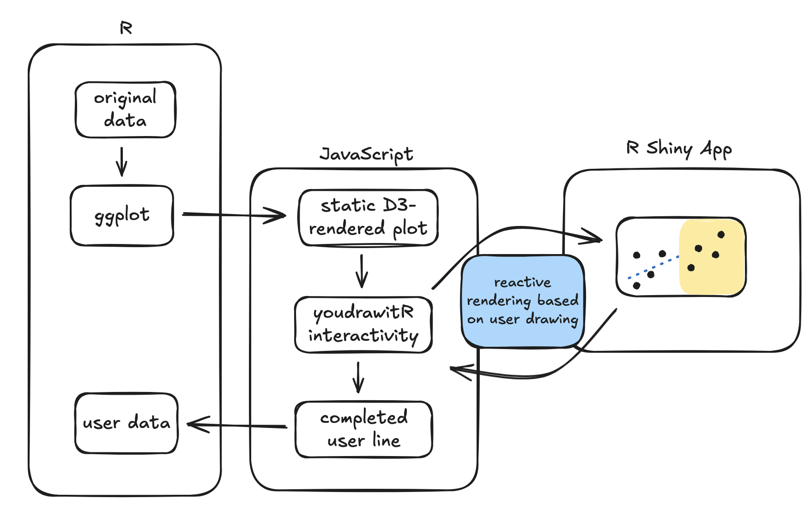
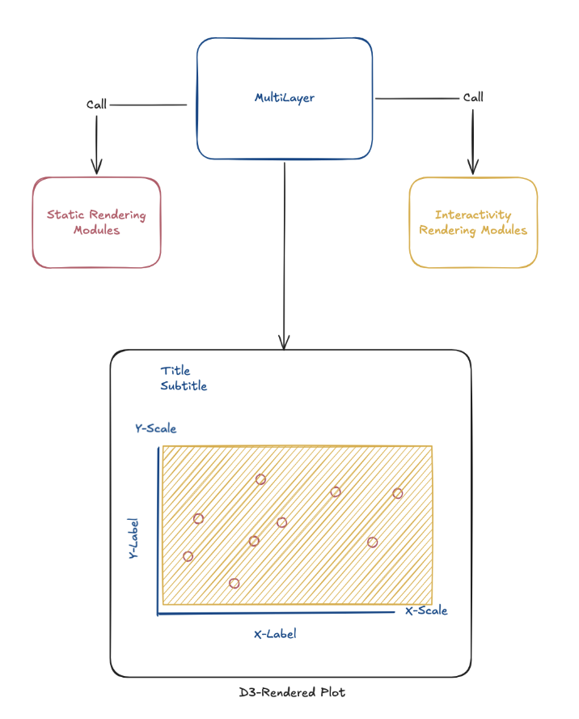
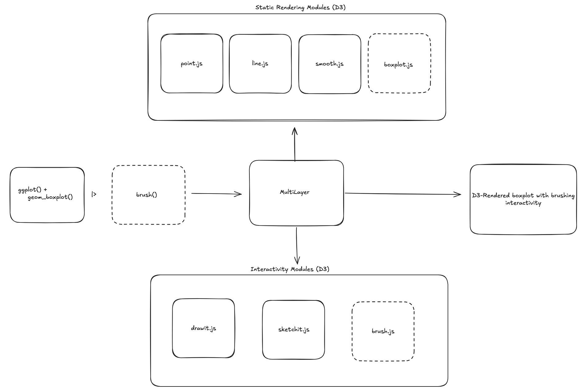

youdrawitR: Integrating Interactive Graphical Testing into the ggplot2 Ecosystem
Alisa Krasilnikov, Dr. Emily Robinson
How do people actually read graphs?
- Visualization turns raw data into accessible narratives
- But how accurately do people interpret what they see?
- Research shows judgments like “fitting a line by eye” are:
- Systematically biased
- Yet remarkably consistent across individuals
The “You Draw It” Idea
- Introduced by the New York Times in 2015
- Show viewers part of a trend + ask them to draw the rest
- Reveals assumptions, biases, and engagement in a way passive charts cannot
What if we could bring this into R?
youdrawitR as a Graphical Testing Tool
- Originally created by Dr. Emily Robinson
- Designed to render within Shiny to receive user input
- Built as an R function by Dillon Murphy
The Problem with the Old youdrawitR
- Required knowledge of JavaScript and D3
- Not accessible to the broader R community
- Not easily extensible to new plot types + other aesthetic features
The statistical visualization community works in ggplot2, so why should interactive testing be any different?
Our Solution: A ggplot2-Native Interface
(ggplot(data = mtcars, aes(x = wt, y = mpg)) +
geom_point() +
labs(x = "Weight", y = "Miles Per Gallon")) |>
drawit()- Pass a
ggplot2object directly intodrawit()orsketchit() - No JavaScript required
- Interactivity as a layer, just like a geom or theme
Restructuring of youdrawitR

Restructuring of youdrawitR

Restructuring of youdrawitR

drawit(): Structured Prediction
- User draws a predicted trend across a highlighted region
- Designed for one-to-one x-y matching
- Useful for: forecasting tasks, graphical testing, education
drawit(): Key Parameters
| Argument | Purpose |
|---|---|
draw_start |
Where drawing begins on the x-axis |
show_on_finish |
Reveals the true line after drawing |
smoother |
Reduces jitter in the drawn path |
interpolator |
Controls density of intermediate points |
sketchit(): Freeform Drawing
- No one-to-one data matching required
- Users can draw multiple lines
- Consistent experience regardless of data density
sketchit(): Key Parameters
| Argument | Purpose |
|---|---|
palette |
Set of colors available for drawing |
starting_color |
Initial drawing color |
button_position |
Position of control interface (to avoid overlapping data) |
min_lines / max_lines |
Controls the number of lines the user can draw |
Shiny Integration
Both functions work inside Shiny apps and return user-drawn data as a reactive tibble:
res <- drawit(p, shiny_message_loc = "my_input")
# res$youdrawit_plot -> the widget
# res$points() -> reactive tibble of drawn (x, y) valuesCaptured data aligns with original x-values, ready for merging and analysis.
The Bigger Picture: An Interactive Grammar
youdrawitR treats interactivity as a grammatical layer added to a plot just as easily as a geom or theme.
This lowers the barrier and keeps researchers within familiar ggplot2 syntax.
What’s Next
- Extend beyond scatterplots bar charts, histograms, line charts
- Python support via
plotnineintegration - CRAN release
Thank You!
Questions?